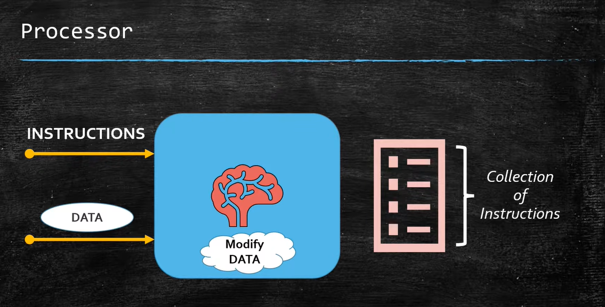
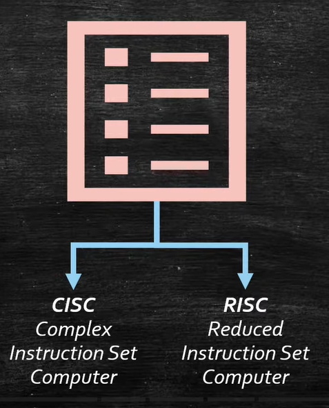
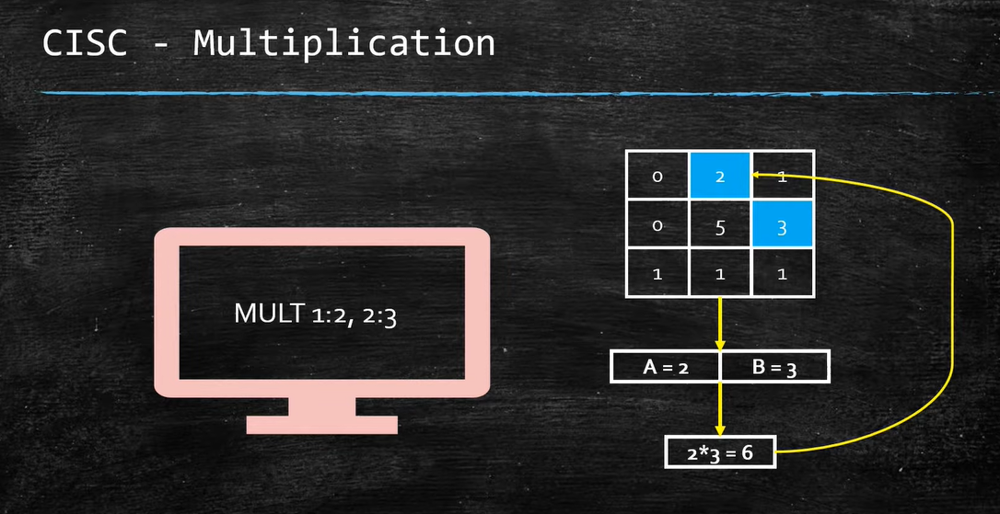
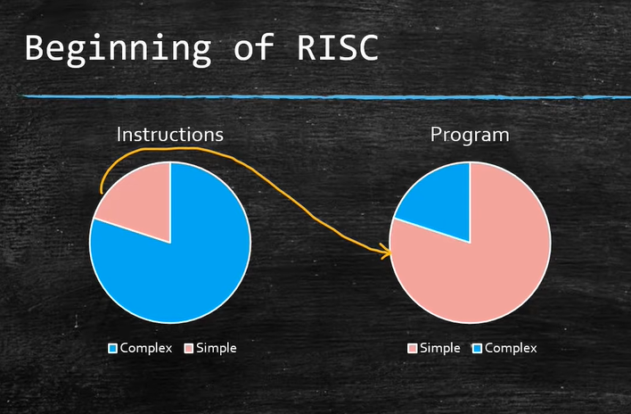
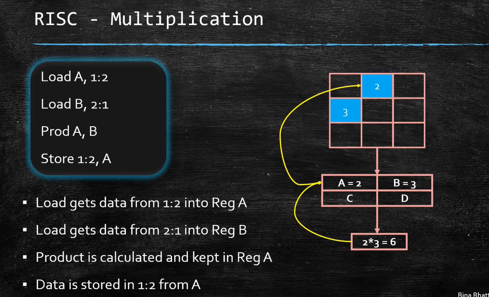
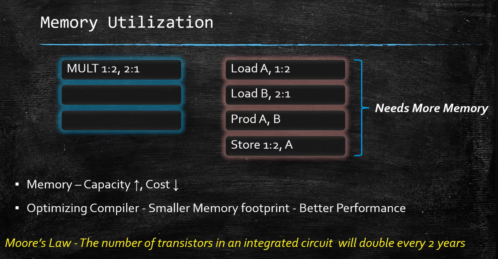
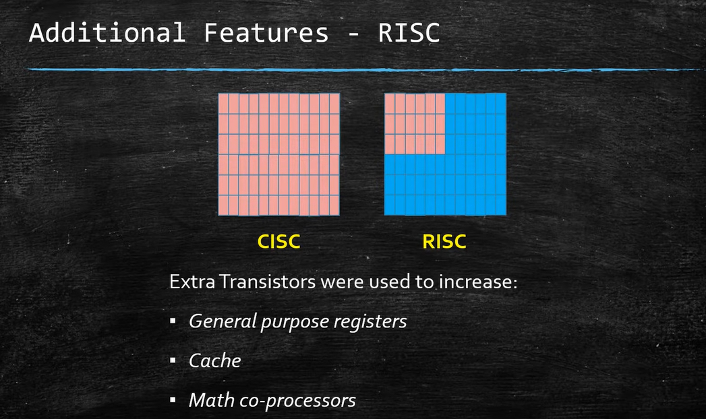
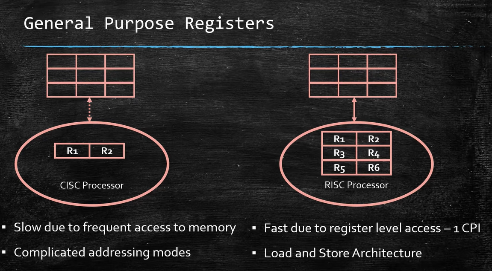
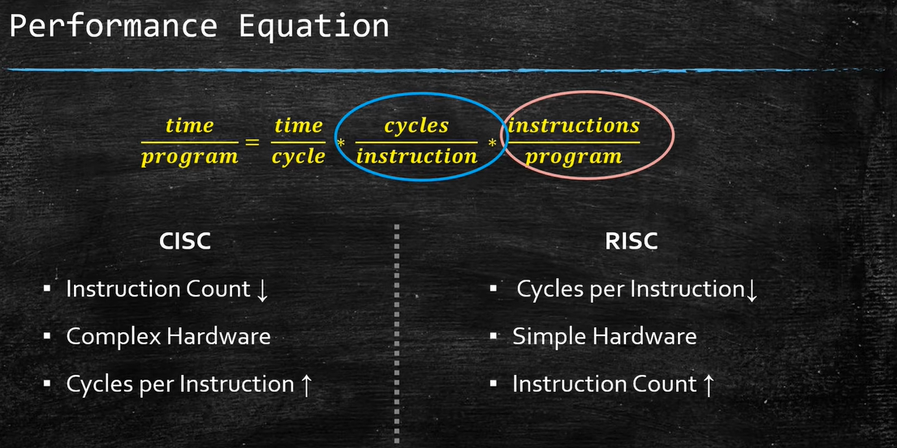

Computer Architecture
CISC vs RISC
Evolution of Processor Design
From complex instructions to streamlined efficiency
CISC
RISC
Use arrow keys or buttons to navigate
Foundation
What is a Computer Processor?
The brain of the computer system. It takes instructions and data as input, and performs data manipulation.

Processor block diagram

Instruction set overview
Based on the number of instructions, processors are divided into
CISC and
RISC architectures.
Historical Context
Before 1970 — The Birth of CISC
- Memory was large in size, slower and expensive.
- Programs were written in High Level Languages (HLL).
- Compilers translated HLL to low-level machine code — a tedious, error-prone process.
- To bridge the gap, it made sense to make machine code more compact.
Result: Shorter programs & simpler compiler design.
Expensive RAM
HLL → Compiler → Machine Code
CISC in Action
Compact Instruction: MULT
MULT [A], [B]
← One line does it all
- Fetches data from memory locations A and B
- Stores them in registers implicitly
- Calculates the product
- Stores result in appropriate memory location

Single instruction triggers multiple operations
Philosophy: Reduce instructions per program — shift complexity from software to hardware.
CISC Tradeoffs
The Cost of Complexity
Hardware Burden
- More silicon used for complex instructions
- Hardware implementation becomes complex
- Processors become large and expensive
Power & Heat
- High power consumption
- Large heat dissipation
- Limits scalability and mobility
Computer architects didn't explicitly create CISC — it evolved based on conditions at the time.
The term "CISC" was coined later when RISC emerged.
The Turning Point
1980s — The Rise of RISC
20%
of instructions are used in
80%
of programs
Complex CISC instructions were rarely used.
- This realization led to rethinking processor design.
- The foundation of RISC architecture was conceptualized.
- The previous architecture was named CISC — comparatively more complex.

The paradigm shift
RISC in Action
Simple Instructions: LOAD · PROD · STORE
1 LOAD R1, [A]
2 LOAD R2, [B]
3 PROD R1, R2
4 STORE R1, [A]
← Each instruction does one simple operation
- LOAD fetches data from memory and stores in register
- PROD calculates multiplication (register-to-register)
- STORE writes result back to memory
- Reading/writing is done explicitly by the programmer

Each step is a separate instruction
Simple instructions → more instructions per program → more memory needed.
RISC Advantages
Why RISC Won

Memory trends

Transistor usage
Since 1980, memory capacity increased and costs dropped (Moore's Law). RISC compilers produced highly optimized code.
Excess transistors used for registers, caches, math coprocessors.
Comparison
CISC vs RISC — Key Differences

Registers & addressing modes

Performance equation
| Basis of Comparison |
CISC |
RISC |
| Instruction Count | Many — can occupy ~1200 pages | Reduced — usually < 100 |
| Instruction Length | Variable (1–15 bytes) | Fixed (e.g., 32-bit) |
| Memory Access | Direct memory access in many instructions | Load/Store architecture — only LOAD/STORE access memory |
| Hardware Complexity | Complex — requires microcode | Simple — hardwired control |
| Power & Heat | High power consumption, large heat | High performance per watt |
| Registers | Fewer registers | Large register file (32+) |
| Transistor Usage | Many for complex instructions | Excess for registers, caches, coprocessors |
CISC: Complex Instruction Set Computer · RISC: Reduced Instruction Set Computer
Real-World
Examples in the Wild
CISC
Intel Core i9
x86 architecture
- Massive instruction set — over 1,000 instructions
- Variable length: 1–15 bytes
- Very dense code, but complex hardware
- Requires microcode to decode & execute
- High clock speeds: 5+ GHz
- Significant power consumption
- Used in gaming PCs, workstations, servers
RISC
Apple M3
ARM architecture
- Small, fixed-length (32-bit) instruction set
- Load/Store architecture
- All operations are register-to-register
- Simplicity allows deep pipelining
- High performance per watt
- Large register file: 32+ registers
- Used in MacBooks, iPads, iPhones — excellent battery life
Conclusion
CISC vs RISC
CISC
- Complex hardware
- Many instructions
- High power
RISC
- Simple, efficient
- Reduced instructions
- Performance per watt
Both architectures have shaped modern computing.
RISC dominates mobile & embedded,
while CISC remains strong in high-performance desktops and servers.
The evolution continues with hybrid approaches like ARM and x86.